摘要
能够及时响应触觉信号，一直被视为达到人类水平灵巧性的关键能力。现有基于学习的机器人操作模型通常省略触觉模态，或采用只提取静态线索的触觉编码器。原因包括缺少多样的训练数据和标准化评测、现有视觉—语言—动作（Vision-Language-Action，VLA）模型的结构约束，以及静态触觉编码器自身的局限。本文针对这些问题推进触觉反馈操作研究。我们提出一套优先采集基本动作原语的高效方案，并用它构建了 100 小时的大规模触觉操作数据集。 为充分使用天然具有高频特性的触觉信号，同时保留现有 VLA 模型的能力，我们提出变速率 Transformer 混合架构（MoT），并引入带时间建模的触觉 VQ-VAE 编码器。我们在 12 项涉及精细力控制和柔性物体操作的任务上验证了触觉反馈策略。相对于最强基线，平均成功率提高超过 30%。
The ability to react dynamically to tactile signals has long been considered crucial to agile human-level dexterity. Yet contemporary learning-based VLAs for robotic manipulation generally either overlook the tactile modality or are limited to encoders with static cues, in part due to the scarcity of diverse training data and standardized evaluation, architectural constraints in current Vision-Language-Action (VLA) models, and limitations of static tactile encoders. In this paper, we push the frontier of tactile-reactive manipulation addressing all of these limitations. We propose a large-scale, 100-hour tactile-rich dataset collected via a novel, data-efficient recipe that prioritizes elementary motor primitives. To effectively exploit naturally high-frequency touch signals without sacrificing the existing capabilities of existing VLAs, we introduce a variable-rate Mix-of-Transformer (MoT) architecture equipped with a novel temporal tactile VQ-VAE encoder. We demonstrate the effectiveness of tactile-reactive policies on 12 manipulation tasks requiring delicate force control, deformable object manipulation, achieving over 30% higher average success rate than the strongest baseline.
1 引言
人类的手巧性不仅依赖于视觉能力，更根本地取决于对精细触觉信号进行感知并快速反应的能力。虽然像将薄卡片插入插槽或用钥匙打开锁这样的日常任务对人类来说毫不费力，但对于当前的机器人学习策略而言却依然具有挑战性。要掌握这些任务，就需要具备触觉反应行为：对触觉信号做出即时、闭环的电机响应，其速度远超传统基于视觉的控制回路所能实现的水平。
Human dexterity relies on more than vision; it depends fundamentally on the ability to feel and rapidly react to fine-grained tactile signals.
While everyday tasks like sliding a thin card into a slot or opening a lock with a key are effortless for humans, they remain challenging for current robot learning policies.
Mastering them requires tactile-reactive behaviors: immediate, closed-loop motor responses to tactile signals, far faster than conventional vision-based control loops allow.
然而，将现有的 Vision-Language-Action（VLA）模型适配于触觉反应式操作面临两大挑战。首先，用于策略预训练的触觉数据集十分匮乏。因此，现有的大规模预训练方法 [70, 62, 35, 51] 主要依赖视觉信息，而忽略了诸如力变化、微小滑动及局部变形等关键物理信号。从零开始学习此类策略需要大量同步的视觉-触觉数据，而收集这种高密度的灵巧遥操作数据则成本极高。为了克服这一问题，我们证明在专门的训练中期阶段即可有效获得触觉能力，从而无需在预训练阶段依赖触觉数据。为此，我们引入了 T-Rex 数据集，这是一个时长 100 小时、包含触觉同步数据的遥操作数据集。 我们并非记录那些狭窄且特定于任务的示范行为，而是围绕多种动词-名词组合来设计系统，通过组合式运动原语与物体交互来涵盖富含接触的行为。如图 1 所示，我们提出了一种训练范式：从大规模人类视频预训练中提取通用的视觉运动先验信息，在中期训练阶段通过丰富的触觉交互来调整交互动态，并借助最少的目标领域示范就能快速适应后续任务。
However, adapting existing Vision-Language-Action (VLA) models for tactile-reactive manipulation presents two major challenges. First, tactile datasets for policy pre-training remain scarce. As a result, existing large-scale pre-training paradigms [ 70 , 62 , 35 , 51 ] are predominantly visual, missing critical physical signals such as force variations, micro-slips, and local deformations.
Learning such policies from scratch would require massive amounts of synchronized visuo-tactile data—a scale at which collecting fine-grained dexterous teleoperation becomes prohibitively expensive.
To overcome this, we demonstrate that tactile capabilities can be efficiently acquired during a dedicated mid-training phase, bypassing the need for tactile data during pre-training. To this end, we introduce the T-Rex Dataset , a 100-hour, tactile-synchronized teleoperation dataset.
Rather than recording narrow, task-specific demonstrations, we design it around diverse verb-noun combinations, covering contact-rich behaviors through compositional motor primitives and object interactions.
As illustrated in Fig. 1 , we formulate a training paradigm that distills general visuomotor priors from large-scale human video pre-training, aligns interaction dynamics via tactile-rich mid-training, and rapidly adapts to downstream tasks with minimal target-domain demonstrations.
除了数据瓶颈问题之外，由于基本频率不匹配，仍存在重大的架构挑战：触觉反应控制需要高频响应，而传统的 VLM 核心架构则运行在较低频率下。尽管最近的双系统架构试图通过完全分离快速运动响应与认知推理来解决这一问题 [5, 4, 10]，但可变速率扩散策略仍局限于针对并行夹持器的任务特定模仿学习领域 [61]。我们提出了一种用于灵巧操作的统一基础模型。该 T-Rex 模型是一个多模态框架，基于可变速率混合Transformer（MoT）架构，将控制功能分解为低速率动作专家用于基础灵巧操作，以及高速率触觉专家用于快速微调。 该高频率专家依赖时空 VQ-VAE 机制来捕捉精细的触觉动态，将原始触觉反馈压缩为紧凑的力量与接触表征。为了在训练过程中使这种触觉方式与更广泛的视觉上下文相契合，我们采用了一种辅助目标用于未来的视觉潜在预测。这些组件共同提升了标准 VLA 能力，实现了高频、闭环的触觉行为。
Beyond the data bottleneck, significant architectural challenges remain due to the fundamental frequency mismatch: tactile-reactive control requires high-frequency responses, whereas standard VLM backbones operate at lower frequencies.
While recent dual-system architectures attempt to address this by completely separating fast motor responses from cognitive reasoning [ 5 , 4 , 10 ] , and variable-rate diffusion policies remain confined to task-specific imitation learning for parallel grippers [ 61 ] , we propose a unified foundation model for dexterous manipulation.
The T-Rex Model is a multi-modal framework built upon a variable-rate Mixture-of-Transformers (MoT) that disentangles control into a low-rate action expert for baseline dexterous manipulation and a high-rate tactile expert for rapid residual refinements.
This high-rate expert relies on a spatio-temporal VQ-VAE to capture fine-grained tactile dynamics, compressing raw tactile feedback into compact representations of force and contact.
To align this tactile modality with the broader visual context during mid-training, we employ an auxiliary objective for future visual latent prediction.
Together, these components extend standard VLA capabilities with high-frequency, closed-loop tactile behaviors.
为了评估触觉反应控制，我们引入了一个真实场景基准测试 12 涉及插入、变形、力感知交互及双手协调的接触丰富的灵巧操控任务。在这些任务中…… T-Rex 提升平均成功率 30% 在现有的灵巧手基础模型基础上，该模型在涉及接触操作的任务中具有更强的鲁棒性和泛化能力。 总结来说，我们的贡献主要有三点：(i) T-Rex 数据集，这是一个开源的 100-小时触觉同步遥操作数据集，以运动基本单元和物体交互为核心进行组织；(ii) T-Rex 模型，一个可变速率的混合Transformer模型，包含时空触觉VQ-VAE，通过我们的中期训练方法进行训练，用于高频闭环控制；(iii) 一个针对触觉反应型灵巧操作的实际场景评估基准，T-Rex 在此基准上建立了良好的基础，为未来的研究提供了支持。
To evaluate tactile-reactive control, we introduce a real-world benchmark of 12 contact-rich dexterous manipulation tasks spanning insertion, deformation, force-sensitive interaction, and bimanual coordination. Across these tasks, T-Rex improves average success rate by 30% over existing dexterous-hand foundation models, with stronger robustness and generalization in contact-rich manipulation.
In summary, our contributions are threefold: (i) the T-Rex Dataset , an open-source 100-hour tactile-synchronized teleoperation dataset organized around motor primitives and object interactions; (ii) the T-Rex Model , a variable-rate Mixture-of-Transformer (MoT) with a spatio-temporal tactile VQ-VAE, trained via our mid-training recipe for high-frequency closed-loop control; and (iii) a real-world evaluation benchmark for tactile-reactive dexterous manipulation on which T-Rex establishes a strong baseline for future work.
2 相关研究
用于操作的手部感知技术。利用手部感知技术进行机器人操作已受到越来越多的关注，先前的研究主要探讨手部感知表示与融合架构。 [17, 50, 72, 22, 19, 46] . 早期方法通过简单的模型，如浅层多层感知器，将触觉观测数据融入模仿学习策略中 [42] ，而后续研究则引入了更为结构化的触觉建模方法，包括基于刚体姿态的编码机制 [58, 29] ，未来视觉或触觉观测与行为的联合预测 [24, 66] ，以及具有触觉感知的低级动作优化 [61, 65] . 近期 VLA 模型通过将触觉信号视为一种额外模态来整合触觉信息 [28, 67] 将触觉表征与视觉及语言潜变量进行对齐 [12, 33] 或设计能够更充分利用力与接触信号的架构 [3, 64] . 尽管取得了这些进展，目前仍没有一种符合规范的、具备触觉感知能力的策略，能够从大规模预训练与训练中期阶段中获益以实现灵巧操作；现有研究大多专注于单臂或平行夹持的本体类型。我们的研究基于这些成果，提出了一种触觉反应型 MoT 架构，该架构包含异步高频触觉专家模块，用于处理具有复杂接触关系的灵巧双手操作任务。
Tactile Sensing for Manipulation. Leveraging tactile sensing for robot manipulation has received increasing attention, with prior works exploring tactile representations and fusion architectures [ 17 , 50 , 72 , 22 , 19 , 46 ] . Early methods injected tactile observations into imitation learning policies with simple models such as shallow MLPs [ 42 ] , while later work introduced more structured tactile modeling, including rigid-body-pose-aware encodings [ 58 , 29 ] , joint prediction of future visual or tactile observations and actions [ 24 , 66 ] , and tactile-aware low-level action refinement [ 61 , 65 ] . Recent VLA models incorporate touch by treating tactile signals as an additional modality [ 28 , 67 ] , aligning tactile representations with visual and language latents [ 12 , 33 ] , or designing architectures that better exploit force and contact signals [ 3 , 64 ] . Despite this progress, there is still no canonical tactile-aware recipe that benefits from large-scale pretraining and midtraining for dexterous manipulation, and existing work largely focuses on single-arm or parallel-gripper embodiments. Our work builds on these efforts with a tactile-reactive MoT architecture featuring an asynchronous high-frequency tactile expert for challenging contact-rich dexterous bimanual manipulation.
统一多模态模型。当前的基础模型越来越多地采用统一架构，能够联合处理多种模态数据，包括文本、图像、视频以及动作 [15, 52, 11]。在机器人学习中，早期的 VLA 模型直接对 VLM 核心模块进行微调，以生成动作 tokens [73, 38]；而近期的方法则引入专门的动作专家，用于持续性的动作生成 [5, 4]。一些研究进一步扩展了 VLA，增加了未来预测功能 [26, 47, 9]、世界建模专家 [6, 2, 27]，或额外的推理模块 [31, 21, 69, 45]。我们的研究在之前的潜态预测与动作生成专家设计基础上进一步拓展，通过异步动机机制将触觉信息作为新的模态进行融合，从而释放了触觉反应式操控的潜力。
Unified Multimodal Models. Recent foundation models increasingly adopt unified architectures that jointly model multiple modalities, including text, images, video, and actions [ 15 , 52 , 11 ] . In robot learning, early VLA models directly finetune VLM backbones to generate action tokens [ 73 , 38 ] , while recent approaches introduce dedicated action experts for continuous action generation [ 5 , 4 ] . Several works further extend VLAs with future prediction [ 26 , 47 , 9 ] , world-modeling experts [ 6 , 2 , 27 ] , or additional reasoning modules [ 31 , 21 , 69 , 45 ] . Our work expands on the previous latent prediction plus action generation experts design by fusing tactile information as a novel modality through asynchronous MoT, unlocking potentials for tactile-reactive manipulation.
灵巧操作中的自我中心人类视频。大规模自我中心人类操作数据集 [25, 20, 44] 为机器人从人类示范中学习提供了动力。先前的研究利用人类视频进行自监督表示学习。 [59, 48, 49] , 可呈现性提取 [34, 39] , VLA 预训练 [62] , 人机协同训练 [35, 51] , 世界行动模型 [18, 63, 40] , 分层规划与控制 [60, 55] ，以及人与机器人的转移 [71, 36] . EgoScale [70] 针对基于人类自我中心数据预训练的操控策略的扩展规律进行进一步研究。继这些研究之后，我们利用大规模的人类自我中心预训练来提供支持。 T-Rex 凭借广泛的视觉运动先验知识，并在大规模遥操作训练期间通过同步触觉反馈对模型进行优化，从而实现富含接触与触觉反应性的行为。
Egocentric Human Videos in Dexterous Manipulation. Large-scale human egocentric manipulation datasets [ 25 , 20 , 44 ] have motivated robot learning from human demonstrations. Prior work leverages human video for self-supervised representation learning [ 59 , 48 , 49 ] , affordance extraction [ 34 , 39 ] , VLA pretraining [ 62 ] , human-robot co-training [ 35 , 51 ] , World Action Models [ 18 , 63 , 40 ] , hierarchical planning and control [ 60 , 55 ] , and human-to-robot transfer [ 71 , 36 ] . EgoScale [ 70 ] further studies scaling laws for manipulation policies pretrained on human egocentric data. Following these works, we leverage large-scale human egocentric pretraining to provide T-Rex with broad visuomotor priors, and further align the model through large-scale teleoperated mid-training data with synchronized tactile feedback, enabling contact-rich and tactile-reactive behaviors.
附录 B 异步级联去噪的附加细节
基于第 4.2 节中引入的宏观表述，我们提出了异步触觉反应级联系统 flow matching 所需的精确优化目标、条件化上下文以及运行实现细节。完整的推理过程被形式化在算法 1 中。
Building upon the macroscopic formulation introduced in Section 4.2 , we provide the exact optimization objectives, conditioning contexts, and runtime implementation details essential for the asynchronous tactile-reactive cascaded flow matching. The complete inference procedure is formalized in Algorithm 1 .
显式条件化与训练目标。在训练过程中，两位专家分别根据截然不同的背景环境，回归共享的速度目标 ，以履行各自的专业职责。动作专家则完全基于多模态潜在背景 （包含头部/手腕摄像头特征、语言提示以及未来预测 tokens）进行训练。其训练目标如下：
Explicit Conditioning and Training Objectives. During training, the two experts regress the shared velocity target v ⋆ but are conditioned on distinctly different contexts to enforce their respective specialized roles. The action expert is conditioned exclusively on the multimodal latent context 𝐜 vl (comprising head/wrist camera features, language prompts, and future-prediction tokens). Its objective is given by:
相反地，触觉专家完全独立于原始视觉观察。取而代之的是，它依赖于高频触觉 tokens 与 ，以及从缓慢数据流中分离出的中间状态。具体来说，我们在 torch.no_grad 模式下执行缓慢的迭代过程，以获取键值缓存 。触觉专家的目标定义为：
Conversely, the tactile expert operates completely independent of the raw visual observations. Instead, it is conditioned on the high-frequency tactile tokens 𝐜 tac and the detached intermediate state from the slow stream. Specifically, we execute the slow tick under torch.no_grad to obtain the key-value cache KV τ split . The tactile expert’s objective is defined as:
总目标同时优化两个组件，并结合未来框架视觉预测损失（第 4.1 节）：
The total objective jointly optimizes both components alongside the future-frame visual prediction loss (Sec. 4.1 ):
KV 缓存组合与延迟增强。被更新后的缓存被正式定义为 ，其中包含视觉语言键值以及在 时刻重新编码的动作位置。这种重新编码机制使得触觉专家能够关注到一个连贯、部分去噪的上下文空间，而非最初的噪声时间编码。
KV Cache Composition and Delay Augmentation. The refreshed cache passed to the tactile expert is formally composed as KV τ split = [ KV lat | KV τ split act ] , which contains both the visual-language keys/values and the action positions re-encoded at time τ split . This re-encoding ensures the tactile expert attends to a coherent, partially-denoised contextual manifold rather than the initial noise-time encoding.
此外，由于部署过程中的快速更新以块内偏移的方式异步进行，因此冻结后的视觉缓存与实时触觉流之间存在固有的时间滞后。为了防止策略在训练中期过度适应完全同步的数据模式，我们引入了延迟增强机制。我们引入离散延迟 ，以随机调整用于提取 的帧索引与用于 的帧索引，从而严格匹配部署时的时间滞后分布。
Furthermore, because the fast ticks in deployment run asynchronously at intra-chunk offsets, there is an inherent temporal staleness between the frozen visual cache and the real-time tactile stream. To prevent the policy from overfitting to perfectly synchronized modalities during mid-training, we introduce a delay augmentation . We draw a discrete delay δ ∼ Uniform { 0 , 4 , 8 , 12 } to randomly shift the frame indices used for extracting 𝐜 tac relative to those used for 𝐜 vl , strictly matching the deployment-time staleness distribution.
计算性摊销与运行时间同步。这种级联设计在部署过程中可大幅节省计算资源。关键的是，视觉塔、潜在专家与动作专家在快速时间步长期间不会重新执行。因此，每个控制步骤的计算成本完全由轻量级触觉专家的 欧拉步数所决定（该算法采用了更小的 FFN 中间尺寸，详见表 4）。
Computational Amortization and Runtime Synchronization. The cascaded design yields substantial computational savings during deployment. Crucially, the visual tower, the latent expert, and the action expert do not re-execute during a fast tick. The per-control-step computational cost is therefore dominated exclusively by the K fast Euler steps of the lightweight tactile expert (which utilizes a reduced FFN intermediate size, as detailed in Tab 4 ).
为确保真实机器人上并行异步流之间的线程安全，部署运行时采用单线程请求套接字与显式执行锁相结合的方式。如算法 1 所述，该机制对两个专家进行序列化处理，确保任何高频快速更新操作在正在进行的慢速更新操作完全将 缓存及中间边界状态 写入共享内存空间之后才会触发。
To ensure thread safety between the parallel asynchronous streams on the real robot, the deployment runtime utilizes a single-threaded request socket combined with an explicit execution lock. As detailed in Algorithm 1 , this mechanism serializes the two experts, guaranteeing that no high-frequency fast tick initiates until any in-flight slow tick has fully committed its KV τ split cache and intermediate boundary state 𝐱 ^ τ split to the shared memory space.
算法 1 异步触觉-反应级级联 Flow Matching 推理
1:
Pre-trained experts
and
;
Total flow steps
, slow segment steps
(
);
Step size
; Boundary threshold
.
2:
Executed actions
at corresponding execution offsets.
3:
4:
Shared Memory: Intermediate state
, KV Cache
, Execution Lock
lock
5:
6:
procedure Slow-Stream Loop (LowFreq)
7:
for each action chunk window do
8:
Get vision-language context
9:
Sample initial noise
10:
Upper Segment Integration
11:
for to do
12:
13:
14:
15:
end for
16:
17:
acquire lock
18:
19:
Refresh and re-encode position cache:
20:
21:
release lock
22:
end for
23:
end procedure
24:
procedure Fast-Stream Loop (HighFreq)
25:
for offsets inside window do
26:
Sample real-time tactile stream
27:
28:
acquire lock
29:
Clone context:
30:
31:
release lock
32:
Terminal Segment Integration
33:
for to do
34:
35:
36:
37:
end for
38:
39:
40:
Execute updated action chunk
41:
end for
42:
end procedure
附录 C 空间-时间触觉编码器实现细节
VQ - VAE 动态力编码器。为了稳健地处理高频触觉数据并减少传感器固有的漂移，通过向量量化变分自编码器（VQ - VAE） [53] 将连续的多指力序列离散化为紧凑的 token 空间。
VQ-VAE Dynamic Force Encoder. To robustly process high-frequency tactile observations and mitigate inherent sensor drift, continuous multi-finger force sequences are discretized into a compact token space using a Vector-Quantized Variational Autoencoder (VQ-VAE) [ 53 ] .
针对每根指尖，在 帧的短时间窗口内会收集原始的六维力向量。VQ-VAE 编码器由 1 D 时间卷积网络构成，该网络通过两个步长块对时间维度进行分层下采样，随后进行时间均值池化，从而产生 维的连续嵌入。该嵌入随后通过向量量化器映射为其在大小为 的学习代码簿中最近的邻居。代码簿参数通过指数移动平均（EMA）进行更新，未充分利用的代码簿项会定期从当前批次的激活值中重新初始化，以防止代码簿退化。
For each fingertip, raw six-dimensional force vectors are collected over a short temporal window of T = 16 frames. The VQ-VAE encoder consists of a 1D temporal convolutional network that hierarchically downsamples the temporal dimension via two strided blocks, followed by temporal mean-pooling to produce a 256 -dimensional continuous embedding. This embedding is subsequently mapped by a vector quantizer to its nearest neighbor within a learned codebook of size K = 64 . The codebook parameters are updated via an Exponential Moving Average (EMA), where underutilized codebook entries are periodically re-seeded from current batch activations to prevent codebook collapse.
同时，采用对称解码器从量化后的 tokens 中重构原始力序列。为了防止编码簿陷入占主导地位的非接触状态，该网络通过幅度加权均方误差（MSE）损失进行优化，对力量较大的接触帧给予更高的优化惩罚。为了维持参数效率及不同 digit 之间的可扩展性，所有五个手指的卷积权重均被共享，并在编码前注入不同的学习手指身份嵌入。这种架构将噪声较大的高维触觉输入压缩为每个手指、每只手一个离散且抗漂移的 token，从而形成结构化的触觉词汇表，随后由快速触觉专家与空间变形图共同使用。
Meanwhile, a symmetric decoder is employed to reconstruct the original force sequence from the quantized tokens. To prevent the codebook from collapsing onto dominant non-contact states, the network is optimized via a magnitude-weighted Mean-Squared Error (MSE) loss, which assigns higher optimization penalties to frames experiencing high-force contacts. To maintain parameter efficiency and cross-digit scalability, convolutional weights are shared across all five fingers, with distinct learned finger-identity embeddings injected prior to encoding. This architecture compresses noisy, high-dimensional tactile inputs into one discrete, drift-robust token per finger per hand, forming a structured tactile vocabulary that is subsequently consumed by the fast tactile expert alongside spatial deformation maps.
触觉变形编码器。除了时间力分布外，每个指尖同时提供一份密集的单一通道空间变形图 ，用以反映局部皮肤位移场。这些图能够捕捉到丰富且高频的接触几何特征，如边缘、滑动和剪切模式，而这些特征在低维力向量中则会被丢失。
Tactile Deformation Encoder. Complementing the temporal force profiles, each fingertip simultaneously provides a dense, single-channel spatial deformation map 𝐝 t representing the local skin displacement field. These maps capture rich, high-frequency contact geometry, such as edges, slip, and shear patterns that are inherently lost in low-dimensional force vectors.
为了处理这些映射数据，我们采用了从 ResNet- 18 骨干网络 [23] 改编而来的轻量级卷积网络。标准输入结构被修改为接受单通道输入，且仅保留前三个残差阶段。每个阶段都附加了一个 卷积层，该层将中间特征图重新投影为固定宽度的 通道。最终得到的空间特征张量被展平后，线性投影到策略的 token 空间。为了在不扩大策略网络可训练参数规模的情况下提供稳定且具备几何信息的接触表示，该编码器在自监督卷积自编码器框架中进行预训练，并在策略学习过程中被冻结 [30]。 在快速推理过程中，这些手指尖变形嵌入数据与量化后的力值 tokens 被串联起来，从而生成了触觉专家所使用的完整、统一的触觉观测数据。
To process these maps, we employ a lightweight convolutional network adapted from a ResNet-18 backbone [ 23 ] . The standard input stem is modified to ingest a single-channel input, and only the first three residual stages are retained. Each stage is appended with a 3 × 3 convolutional layer that re-projects the intermediate feature maps to a fixed width of 128 channels. The resulting spatial feature tensor is flattened and linearly projected into the policy’s token space. To supply a stable, geometry-aware contact representation without expanding the trainable parameter footprint of the policy network, this encoder is pre-trained within a self-supervised convolutional autoencoder framework and subsequently frozen during policy learning [ 30 ] . During fast-stream inference, these per-fingertip deformation embeddings are concatenated with the quantized force tokens, yielding the complete, unified tactile observation consumed by the tactile expert.
附录 D 真实环境设置与遥操作栈
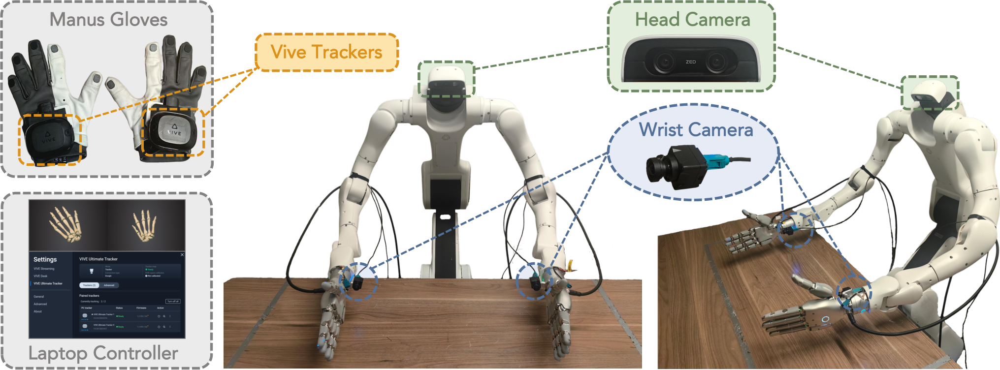
图 7：Dexmate Vega 上的机器人系统配置，包含双手机器人 1 与灵巧手 Sharpa Wave。手腕处安装了两台 ZED X One S 广角摄像头，头部则安装了一台 ZED X Mini 摄像头。在遥操作过程中，我们使用 Manus 手套来捕捉手部目标动作，并利用 VIVE 追踪器来捕捉手腕目标姿态。
我们在配备两个 Sharpa Wave 灵巧手的 Dexmate Vega- 1 双手机器人上开展数据收集与策略部署工作。本节介绍了我们实验中使用的硬件、感知系统及遥操作界面。系统的整体架构如图 7 所示。
We conduct data collection and policy rollout on a Dexmate Vega-1 bimanual robot equipped with two Sharpa Wave dexterous hands. This section describes the hardware, perception system, and teleoperation interface used in our experiments. An overview of the system is shown in Fig. 7 .
《机器人硬件与控制》。Dexmate Vega- 1 是一款双臂移动机器人，每臂均配备 7 个驱动关节。在我们的设置中，车轮、躯干及头部关节保持固定，仅驱动手臂关节 14。为了使用相对末端执行器姿态指令控制机器人，我们通过 Pink [7] 方法采用微分逆运动学技术。生成的关节空间指令通过低通滤波器处理后，再发送至制造商的低级级联 PID 控制器。在策略执行过程中，T-Rex 策略推理线程与以 300 Hz 频率运行的高频低级控制线程并行运行。策略输出 action chunks，该输出异步更新低级控制器所跟踪的目标值。
Robot Hardware and Control. The Dexmate Vega-1 is a dual-arm mobile robot with 7 actuated joints per arm. In our setup, we keep the wheels, torso, and head joints fixed, and actuate only the 14 arm joints. To control the robot using relative end-effector pose commands, we use differential inverse kinematics through Pink [ 7 ] . The resulting joint-space commands are passed through a low-pass filter before being sent to the manufacturer’s low-level cascade PID controller. During policy rollout, a T-Rex policy inference thread runs concurrently with a high-frequency low-level control thread operating at 300 Hz. The policy outputs action chunks, which asynchronously update the targets tracked by the low-level controller.
感知系统。Dexmate Vega - 1 配备了一个安装在头部的 ZED X Mini 立体相机。我们使用来自该相机的左侧单目 RGB 数据流。此外，我们在机器人手腕上安装了两台 ZED X One S 单目 RGB 相机（宽视场版本），以捕捉因头部相机遮挡而无法观察到的视角。相机位置经过调整，使得头部相机能够观察到机器人前方所有可到达的工作空间，同时手腕相机能够清晰观察到手指部分，且手掌不会造成明显遮挡。所有三个 RGB 数据流均以 分辨率进行采集。除了视觉观测外，每个机器人手还包含五个指尖触觉传感器。对于每个触觉传感器，我们记录并使用估计的形变深度以及 6 轴力 wrench值。
Perception System. The Dexmate Vega-1 includes a ZED X Mini stereo camera mounted on the head. We use the left monocular RGB stream from this camera. In addition, we mount two ZED X One S monocular RGB cameras (wide-view variant) on the robot wrists to capture viewpoints that may be occluded from the head camera. The camera poses are adjusted so that the head camera observes the full reachable workspace in front of the robot, while the wrist cameras maintain clear views of the fingers without significant occlusion from the palms. All three RGB streams are captured at a resolution of 640 × 360 . In addition to visual observations, each robot hand contains five fingertip tactile sensors. For each tactile sensor, we record and use the estimated deformation depth and the 6-axis net wrench.
遥操作。在实际数据收集中，我们采用基于 Manus 手套和 VIVE 追踪器的人类遥操作系统。两个 VIVE 追踪器提供 手腕姿态，这些数据通过与策略部署时相同的控制流程进行传递。Manus 手套则提供相对于手基的指尖位置。这些位置通过制造商提供的基于 Pinocchio [8] 和 CasADi [1] 的微分逆运动学包，被重新映射至 Sharpa Wave 机器人手处。与策略部署类似，遥操作也采用高级线程与高频低级控制线程机制。高级线程以 30 Hz 频率运行，从 Manus 手套和 VIVE 追踪器读取目标姿态信息，将指令重新映射至机器人关节空间，记录视频及本体感知数据，并异步更新 300 Hz 低级控制线程。
Teleoperation. For real-world data collection, we use a human teleoperation system based on Manus gloves and VIVE trackers. The two VIVE trackers provide S E ( 3 ) wrist poses, which are passed through the same control pipeline used during policy rollout. The Manus gloves provide fingertip positions relative to the hand bases. These positions are retargeted to the Sharpa Wave robot hands using a manufacturer-provided differential inverse kinematics package based on Pinocchio [ 8 ] and CasADi [ 1 ] . As in policy rollout, teleoperation uses a high-level thread and a high-frequency low-level control thread. The high-level thread runs at 30 Hz, reads target pose information from the Manus gloves and VIVE trackers, retargets the commands to robot joint space, records video and proprioceptive observations, and asynchronously updates the 300 Hz low-level control thread.
附录 E 基线模型的实现细节
在我们主论文的 5.2章节中，我们针对 12任务比较了 T-Rex与 6基线模型。在此，我们提供了复现 6基线模型的实现细节。
In the Sec. 5.2 of our main paper, we compare T-Rex with 6 baselines across 12 tasks, here we provide the implementation details of reproduce of the 6 baselines.
ViTacFormer 机器人策略 [24] is an ACT 一种视觉-触觉模仿学习策略，通过视觉-触觉融合及辅助的未来触觉预测目标来学习跨模态表征。我们遵循官方实现方案。 并在我们的平台上将 ViTacFormer 作为任务特定基线进行复现 12 接触丰富的任务。具体而言，我们分别进行训练 ACT 每个策略 12 T-Rex 采用与我们的方法相同的训练后设置的任务， 100 每任务下的演示次数 100 训练周期。遵循原始设计，我们采用 6 作为触觉调节输入的单指力向量，可实现双臂双手控制。我们采用 ACT 块大小 100 , 隐藏维度 512 , 前馈维度 3200 ，以及 KL 权重 10 . 原始实现假设在预测过程中会屏蔽那些具有多个机械耦合关节的灵巧手 21 - DoF。我们针对我们的 22 - DoF Sharpa Wave 手进行了策略调整，并直接对所有手指关节进行预测，无需屏蔽，这得益于完全驱动式硬件设计。所有模型均使用 AdamW 优化器进行训练，学习率为 ，全局批量大小为 。所有基准模型在观察空间、动作空间及评估协议上均保持统一。
ViTacFormer [ 24 ] is an ACT-style visuo-tactile imitation learning policy that learns cross-modal representations through visual-tactile fusion and an auxiliary future tactile prediction objective. We follow the official implementation 1 1 1 https://github.com/RoboVerseOrg/ViTacFormer and reproduce ViTacFormer as a task-specific baseline on our 12 contact-rich tasks. Specifically, we train separate ACT policies for each of the 12 T-Rex tasks using the same post-training setting as our method, with 100 demonstrations per task and 100 training epochs. Following the original design, we use 6D per-finger force vectors as tactile conditioning inputs and enable bimanual control for both arms. We use an ACT chunk size of 100, hidden dimension of 512, feedforward dimension of 3200, and KL weight of 10. The original implementation assumes 21-DoF dexterous hands with several mechanically coupled joints masked out during prediction. We adapt the policy to our 22-DoF Sharpa Wave hands and predict all finger joints directly without masking, enabled by the fully actuated hardware design. All models are trained with AdamW using a learning rate of 3 × 10 − 4 and a global batch size of 16 × 8 . The observation space, action space, and evaluation protocol are unified across all baselines.
反应式扩散策略（RDP）[61]是一种慢速-快速视觉-触觉模仿学习框架，它将低频潜势扩散策略与高频触觉反应控制器相结合，用于高接触性的操作任务。我们遵循官方实现方案，并在我们的12接触密集型任务中作为特定任务基准模型来复现RDP。具体而言，对于每一个12和T-Rex任务，我们使用与我们的方法相同的训练后演示数据，分别训练不对称Tokenizer（AT）和潜势扩散策略（LDP）。在AT阶段，我们以64的批量大小和的学习率，在100轮次内训练基于触觉条件的动作tokenizer。按照原始设计，我们利用触觉力观测数据作为高频条件信号，其中触觉输入由所有10手指产生的6 D力/扭矩向量构成。 在 LDP 阶段，我们基于最新 AT 检查点，通过 200 轮次对潜在扩散策略进行训练。我们采用原始的 CNN 基础扩散架构以及 RDP 中提出的慢速-快速潜在动作表述方式。所有模型均按任务独立进行训练，使用与其他基线模型相同的训练分割和评估设置。
Reactive Diffusion Policy (RDP) [ 61 ] is a slow-fast visuo-tactile imitation learning framework that combines a low-frequency latent diffusion policy with a high-frequency tactile-reactive controller for contact-rich manipulation. We follow the official implementation 2 2 2 https://github.com/xiaoxiaoxh/reactive_diffusion_policy and reproduce RDP as a task-specific baseline on our 12 contact-rich tasks. Specifically, for each of the 12 T-Rex tasks, we separately train the Asymmetric Tokenizer (AT) and Latent Diffusion Policy (LDP) using the same post-training demonstrations as our method. For the AT stage, we train a tactile-conditioned action tokenizer for 100 epochs using a batch size of 64 and a learning rate of 1 × 10 − 3 . Following the original design, we use tactile force observations as high-frequency conditioning signals, where the tactile input consists of 6D force/torque vectors from all 10 fingers. For the LDP stage, we train the latent diffusion policy for 200 epochs initialized from the latest AT checkpoint. We use the original CNN-based diffusion architecture and slow-fast latent action formulation proposed in RDP. All models are trained separately per task using identical training splits and evaluation settings as other baselines.
触觉- VLA [28] 是一种具备触觉感知的机器人 vision-language-action 将触觉感知整合进的模型 VLA 通过多模态融合与混合力-位控制实现高接触操作策略。请阅读该论文，我们将复现 Tactile- 的相关内容。 VLA 作为我们任务特定的基准模型 12 接触丰富的任务。由于原始方法采用 GelSight 将触觉图像作为触觉输入，我们调整了触觉编码器以采用该方式 6 所有机器人的力/扭矩矢量 10 手指，与我们平台上可用的触觉观测结果相匹配。遵循原始设计，我们分别训练触觉策略。 VLA 每个策略 12 T-Rex 使用与我们的方法相同的训练后演示任务。所有模型均经过训练 100 训练周期 8 采用简单架构的 GPU MLP 触觉编码器。 我们采用峰值学习率 ，并伴随余弦衰减机制逐渐过渡到 ，在最初的 5300 步数中则采用线性热身策略。观测空间、动作空间及评估协议在所有基准模型中均保持统一。
Tactile-VLA [ 28 ] is a tactile-aware vision-language-action model that integrates tactile sensing into VLA policies for contact-rich manipulation through multimodal fusion and hybrid force-position control. Follow the paper, we reproduce Tactile-VLA as a task-specific baseline on our 12 contact-rich tasks. Since the original method uses GelSight tactile images as tactile inputs, we adapt the tactile encoder to instead use 6D force/torque vectors from all 10 fingers, matching the tactile observations available on our platform. Following the original design, we train separate Tactile-VLA policies for each of the 12 T-Rex tasks using the same post-training demonstrations as our method. All models are trained for 100 epochs on 8 GPUs using the Simple-MLP tactile encoder. We use a peak learning rate of 3 × 10 − 4 with cosine decay to 3 × 10 − 5 and linear warmup for the first 5300 steps. The observation space, action space, and evaluation protocol are unified across all baselines.
EgoScale [70] 研究了大规模以自我为中心的人类视频预训练在灵巧操作中的可扩展性，结果表明人类动作预测随着数据量的增加而可预测地提升，并可应用于高 DoF 机器人手。我们使用 GR00T N1 7 实现 ，并从预训练的 nvidia/GR00T-N1 7 - 3 B 检查点开始初始化。对于每个 12 T-Rex 任务，我们针对训练后阶段中使用的特定任务演示，对不同的策略进行微调。每个策略在 200 个周期内通过 32 全局批量大小在 8 个 GPU 上训练。我们使用双手臂的相对末端执行器动作，以及 22 - DoF 关节动作用于 Sharpa Wave 手。在微调过程中，我们采用概率为 0.2 的状态丢弃技术以及标准的图像颜色抖动增强方法。 观察空间、动作空间及评估协议与其他基线模型保持一致。
EgoScale [ 70 ] studies the scalability of large-scale egocentric human video pretraining for dexterous manipulation, showing that human action prediction improves predictably with data scale and transfers to high-DoF robotic hands. We reproduce this baseline using the GR00T N1.7 implementation 3 3 3 https://github.com/Nvidia/Isaac-GR00T and initialize from the pretrained nvidia/GR00T-N1.7-3B checkpoint. For each of the 12 T-Rex tasks, we fine-tune a separate policy on the same task-specific demonstrations used in our post-training stage. Each policy is trained for 200 epochs with a global batch size of 32 on 8 GPUs. We use the relative end-effector actions for the bimanual arms, and 22-DoF joint actions for the Sharpa Wave hands. During fine-tuning, we apply state dropout with probability 0.2 and standard image color jitter augmentation. The observation space, action space, and evaluation protocol are kept the same as other baselines.
以及 + 触觉 [5] 我们复现了 使用官方的 OpenPI 代码库 并从发布中初始化所有策略 预训练检查点。对于每个 12 T-Rex 在任务中，我们使用与我们的方法相同的任务特定训练后演示来微调不同的策略。我们采用双手联合空间控制方案，由双臂组成。 联合控制与 22 - DoF 灵巧手关节控制。
π 0.5 and π 0.5 + tactile [ 5 ] We reproduce π 0.5 using the official OpenPI codebase 4 4 4 https://github.com/Physical-Intelligence/openpi and initialize all policies from the released π 0.5 pretrained checkpoint. For each of the 12 T-Rex tasks, we fine-tune separate policies using the same task-specific post-training demonstrations as our method. We adopt a bimanual joint-space control setup consisting of dual-arm 2 × 7 joint control and 22-DoF dexterous hand joint control.
我们测试了两种变体：仅基于视觉的 基线模型，以及基于触觉条件的 + 触觉基线模型。对于触觉版本，我们通过将所有 10 手指的 6 D 力/扭矩向量串联起来，来扩展原始状态输入，形成单步触觉观测数据。遵循官方实现方案，我们使用 动作专家架构，并采用动作时间窗为 16，通过提供的余弦学习率调度机制进行微调，其峰值学习率为 。所有模型均在启用了 FSDP 的 8 GPU 上训练，全局批量大小为 16。观测空间、动作空间及评估协议在所有基线模型中保持统一。
We evaluate two variants: a visual-only π 0.5 baseline and a tactile-conditioned π 0.5 + tactile baseline. For the tactile version, we extend the original state input by concatenating single-step tactile observations consisting of 6D force/torque vectors from all 10 fingers. Following the official implementation, we use the π 0.5 action expert architecture with action horizon 16 and fine-tune using the provided cosine learning rate schedule with peak learning rate 5 × 10 − 5 . All models are trained on 8 GPUs with FSDP enabled and a global batch size of 16. The observation space, action space, and evaluation protocol are unified across all baselines.
附录 F 评估任务
我们进行了评估 T-Rex on 12 需要大量接触接触的灵巧操控任务，能够模拟各种现实世界中的力反应与触觉变形场景。力反应任务要求机器人在操控过程中精确调节接触力——例如抓取易碎物体、施加可控压力或防止滑动。成功实现依赖于触觉反馈来调整抓握力，以避免物体损坏或任务失败。触觉变形敏感任务则涉及那些触觉传感器垫的变形起关键作用的物体或机制——例如堆叠的杯子，或通过表面纹理识别的麻将牌。机器人必须感知并应对仅通过视觉无法检测到的物理变形。某些任务则需要同时实现这两种功能，通常涉及插入、提取和双手操作等较长的操作序列。 它们属于我们 12 接触丰富任务中最具挑战性的类别。每个任务均依据两种评分标准之一进行评估：一种加性评分标准为每个完成的子步骤赋予独立的部分分数；另一种基于进展的评分标准则给出一个综合分数，反映机器人在预定义的成功层级中的进展程度。
We evaluate T-Rex on 12 contact-rich dexterous manipulation tasks which capture various real world force-reactive and tactile-deformation situations.
Force-reactive tasks require the robot to precisely regulate contact forces during manipulation—such as grasping fragile objects, applying controlled pressure, or resisting slip. Success depends on tactile feedback to adjust grip force and avoid object damage or task failure.
Tactile-deformation sensitive tasks involve objects or mechanisms where deformation of the tactile sensor pad plays a key role—such as stacked cups, or mahjong tiles identified by surface texture. The robot must sense and respond to physical deformation that cannot be detected by vision alone.
Some tasks require both at the same time, often in longer sequences involving insertion, extraction, and bimanual handovers. They are the most challenging category among our 12 contact-rich tasks.
Each task is evaluated using one of two grading rubrics: an additive rubric awards independent partial credit for each completed sub-step, while a progress-based rubric assigns a single score reflecting how far the robot progressed along a predefined success hierarchy.
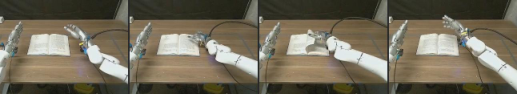
图 8：任务 I 的关键阶段：翻页操作。
任务一：翻页。文本指令：“使用右手食指从右向左翻动书本的一页。”机器人必须将打开书本右侧的一页纸抬起，将其沿书脊方向移动，然后平放在左侧。
Task I: Flip Page. Text Instruction: “Turn a page of the book from right to left using your right index finger.” The robot must lift
a single sheet from the right side of an open book, sweep it across the
spine, and smooth it down flat on the left side.
评分标准（累加式）：
Grading rubric (additive):
- •
: (a) 用一根手指成功触碰到了书页。
+ 0.3 : (a) Successfully touched the book page with a single finger.
- •
: (b) 使用食指将页面向上翻动。
+ 0.3 : (b) Using the index finger turn the page up.
- •
: (c) 成功从右至左翻转恰好一页纸，并将其平滑处理为平整状态。
+ 0.4 : (c) Successfully flips exactly one page from right to left and smooths it flat.
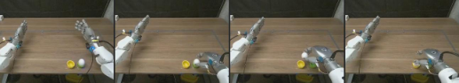
图 9：任务 II 的关键阶段：移卵过程。
任务二：搬运鸡蛋。文本指令：“使用右手拇指和食指，从绿色鸡蛋盘中取出鸡蛋，并将其放入黄色鸡蛋盘中。”机器人必须在不打破蛋壳的情况下，从绿色容器中抓取脆弱的鸡蛋，将其从表面提起，运送到黄色容器上方，然后轻轻将其释放到内部。
Task II: Transfer Egg. Text Instruction: “Using the right thumb and index finger, pick up the egg from the green egg tray and place it into the yellow egg tray.” The
robot must grasp a fragile egg without cracking the shell from the green container, lift it off the surface,
transport it above the yellow container, and gently release it inside.
评分标准（累加式）：
Grading rubric (additive):
- •
: (a) 靠近鸡蛋并与其接触，且不会将其从桌上撞落。
+ 0.2 : (a) Approaches the egg and makes contact without knocking it off the table.
- •
: (b) 将鸡蛋从桌子上拿起，且不使其破裂。
+ 0.3 : (b) Lifts the egg off the table without cracking it.
- •
: (c) 将蛋运送到黄色容器上方。
+ 0.2 : (c) Transports the egg above the yellow container.
- •
: (d) 使容器内的蛋保持完整状态。
+ 0.3 : (d) Releases the egg inside the container intact.
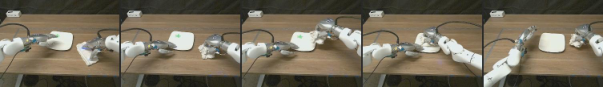
图 10：任务 III：擦拭板的关键阶段。
任务三：擦拭盘子。文本指令：“桌上有一个白色盘子和一个白色布；白色盘子上有彩色污渍。用右手拿起布，用左手固定住盘子，然后用布擦拭掉污渍。”机器人必须用右手握住布，用左手按压盘子以固定其位置，使布与盘子表面接触，持续擦拭盘子直至彩色污渍完全清除，最后将布放回桌上，同时松开盘子。
Task III: Wipe Plate. Text Instruction: “There is a white plate and a white cloth on the table; the white plate has colored stains on it. Use your right hand to pick up the cloth, hold the plate steady with your left hand, and then use the cloth to wipe away the stains.” The
robot must grasp the cloth with the right hand, press down on the plate
with the left hand to hold it steady, bring the cloth into contact with
the plate surface, wipe the plate until the colored stains are fully
removed, and place the cloth back on the table while releasing the plate.
评分标准（累加式）：
Grading rubric (additive):
- •
: (a) 右手握住抹布。
+ 0.2 : (a) Right hand grasps the rag.
- •
: (b) 左手按压盘子以固定其位置。
+ 0.1 : (b) Left hand presses down on the plate to hold it steady.
- •
: (c) 使抹布与板面接触。
+ 0.2 : (c) Brings the rag into contact with the plate surface.
- •
: (d) 擦拭盘子直至图案完全消失（无可见墨迹）。
+ 0.4 : (d) Wipes the plate until the design is fully removed
(no visible ink remaining).
- •
: (e) 将抹布放回桌上，并松开盘子。
+ 0.1 : (e) Places the rag back on the table and releases the plate.
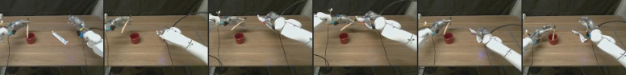
图 11：任务 IV 的关键阶段：使用牙膏。
任务四：使用牙膏。文本指令：“台面左侧放置一个装有牙刷的杯子，右侧则有一支打开的牙膏管。用左手握住牙刷，用右手握住牙膏，在刷子上挤一些牙膏，然后将牙膏管放回原处。”机器人必须用一只手握住牙刷，另一只手握住牙膏管，将牙膏管的喷嘴对准刷毛上方，挤出一点牙膏，再将牙刷竖直放回其固定处，并将牙膏放回桌上。
Task IV: Apply Toothpaste. Text Instruction: “On the left side of the countertop sits a cup holding a toothbrush, while an open tube of toothpaste rests on the right. Pick up the toothbrush with your left hand and the toothpaste with your right, squeeze some toothpaste onto the brush, and then set the tube back down.” The
robot must grasp a toothbrush in one hand and a toothpaste tube in the
other, align the tube nozzle above the bristles and squeeze out a bead
of toothpaste, and return the toothbrush upright into its holder and
the toothpaste back onto the table.
评分标准（累加式）：
Grading rubric (additive):
- •
: (a) 握住牙刷。
+ 0.2 : (a) Grasps the toothbrush.
- •
: (b) 握住牙膏管。
+ 0.1 : (b) Grasps the toothpaste tube.
- •
: (c) 将一滴牙膏涂抹在刷毛上。
+ 0.4 : (c) dispenses a bead of toothpaste onto the bristles.
- •
: (d) 将牙刷竖直放回其收纳器中。
+ 0.2 : (d) Returns the toothbrush upright into its holder.
- •
: (e) 将牙膏管放回桌上。
+ 0.1 : (e) Places the toothpaste tube back on the table.
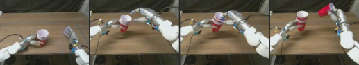
图 12：任务 V：分杯游戏的关键阶段。
任务 V：拆分杯子。文本说明：“一叠红色塑料杯子放在桌面上；用右手将最上面的杯子滑出，并用力将其与其余杯子分离。”当面对一叠叠嵌套的杯子时，机器人必须用左手抓住整个堆叠物以保持稳定，然后用右手旋转并轻轻摩擦，将最上面的一个杯子摘下来。
Task V: Split Cup. Text Instruction: “A stack of red plastic cups sits on the desktop; use the right hand to slide out the topmost one, exerting effort to separate it from the rest of the stack.” Given a stack of nested cups on the
table, the robot must grasp the stack with the left hand to stabilize
it, and use the right hand to twist and rub exactly one cup off the
top of the stack.
评分标准（累加式）：
Grading rubric (additive):
- •
: (a) 左手抓住并固定杯堆叠。
+ 0.2 : (a) Left hand grasps and stabilizes the cup stack.
- •
: (b) 右手抓住堆叠物中最顶端的杯子。
+ 0.3 : (b) Right hand grasps the topmost cup of the stack.
- •
: (c) 右手扭转动作，使堆叠中的杯子恰好分离出 하나。
+ 0.3 : (c) Right hand twists and separates exactly one cup
from the stack.
- •
: (d) 右手保持那个独立的杯子完好无损。
+ 0.2 : (d) Right hand holds the single separated cup intact.
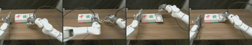
图 13：任务 VI 的关键阶段：麻将分类。
任务六：整理麻将牌。文本说明：“桌子上放置三个盒子，分别代表麻将牌的‘红中’、‘绿发’和‘白空’牌。桌子中央有一枚面朝下的麻将牌。现在，用右手握住该牌并观察其图案；然后，用左手打开与该图案对应的盒子，将牌放入其中。”机器人必须用右手拿起面朝下的麻将牌，通过触觉感知其表面来识别其类别，然后用左手打开收纳盒中对应盒子的盖子，用右手将牌放入盒内，最后用右手拇指关闭盖子。
Task VI: Sort Mahjong. Text Instruction: “Three boxes are placed on the table, representing the Mahjong tiles ’Red Zhong’, ’Green Fa’, and ’White Blank’, respectively. In the center of the table lies a single Mahjong tile, placed face-down. Now, using your right hand, grasp the tile and discern its pattern; then, use your left hand to open the box corresponding to that pattern and place the tile inside.” The robot must
pick up a face-down mahjong tile with the right hand and feel its
surface via tactile sensing to identify its category, then use the
left hand to slide open the lid of the matching compartment in the
organizer box, place the tile into the compartment with the right
hand, and close the lid with the right thumb.
评分标准（累加式）：
Grading rubric (additive):
- •
: (a) 右手拿起面背型麻将牌。
+ 0.1 : (a) Right hand picks up the face-back mahjong tile.
- •
: (b) 左手滑动打开正确隔间的盖子。
+ 0.5 : (b) Left hand slides open the lid of the correct
compartment.
- •
: (c) 右手将拼图块放入正确的格子中。
+ 0.2 : (c) Right hand places the tile into the correct
compartment.
- •
: (d) 右拇指闭合了舱盖盖片。
+ 0.2 : (d) Right thumb closes the compartment lid.
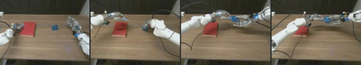
图 14：任务 VII：开锁的关键阶段。
任务七：打开锁。文本说明：“桌子的左侧放置一本红色书籍，其上方有一把灰色钥匙；右侧则有一个锁。使用左拇指和食指将钥匙滑出，然后用右手拿起锁，利用钥匙将其打开。”机器人必须先用一只手握住钥匙，用另一只手握住挂锁，将钥匙对准锁孔并插入，然后旋转钥匙以释放锁扣。
Task VII: Open Lock. Text Instruction: “On the left side of the desk lies a red book, atop which rests a gray key; on the right side is a lock. Using your left thumb and index finger, slide the key free; then, pick up the lock with your right hand and use the key to unlock it.” The robot must first grasp the
key with one hand and the padlock with the other, align and insert
the key into the keyhole, and rotate it to release the shackle.
评分标准（累加式）：
Grading rubric (additive):
- •
: (a) 掌握关键要素。
+ 0.2 : (a) Grasps the key.
- •
: (b) 握住锁扣。
+ 0.1 : (b) Grasps the padlock.
- •
: (c) 将钥匙对齐并插入锁孔中。
+ 0.4 : (c) Aligns and inserts the key into the keyhole.
- •
: (d) 旋转钥匙并成功打开锁具。
+ 0.3 : (d) Rotates the key and successfully opens the lock.
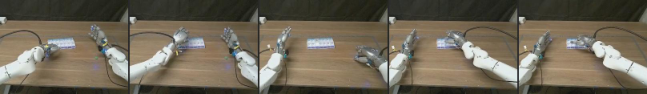
图 15：任务八的关键阶段：平板电脑补货。
任务八：补充药片。文本指令为：“用左手打开小盒中的一个隔层，用右手拿起桌上的小球，将小球放入盒中，然后关闭盒盖。”机器人必须用左食指按下隔层盖上的按钮以解锁盖子，用左拇指掀开盖子，用右手拿起小球，将小球放入打开的隔层中，再用右食指按下盖子使其闭合。
Task VIII: Refill Tablet. Text Instruction: “Use your left hand to open one of the compartments in the small box, use your right hand to grasp the small ball on the table, place the ball into the box, and then close the box.” The robot must
use the left index finger to press the button on a compartment lid to
unlock it, flip the lid open with the left thumb, pick up the ball
with the right hand, place the ball into the open compartment, and
press the lid closed with the right index finger.
评分标准（累加式）：
Grading rubric (additive):
- •
: (a) 左食指按下舱盖按钮以解锁舱盖。
+ 0.2 : (a) Left index finger presses the compartment button
to unlock the lid.
- •
: (b) 左拇指将盖子打开。
+ 0.2 : (b) Left thumb flips the lid open.
- •
: (c) 右手捡起球。
+ 0.2 : (c) Right hand picks up the ball.
- •
: (d) 右手将球放入敞开的隔间中。
+ 0.2 : (d) Right hand places the ball into the open
compartment.
- •
: (e) 右拇指压住盖子使其闭合。
+ 0.2 : (e) Right thumb presses the lid closed.
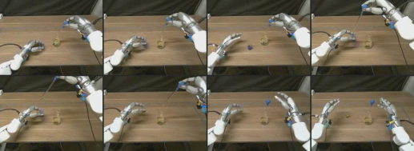
图 16：任务 IX 的关键阶段：酸碱中和过程。
任务九：酸碱中和。文本说明：“桌子的右侧放置一个厄伦迈尔烧瓶，其中含有 200 毫升的柠檬酸溶液；左侧则有一个烧杯，内装 20 毫升的 NaOH 溶液，该溶液含有溴百里酚蓝指示剂——因其碱性而呈现蓝色。用右手拿起滴管，吸取约 5 毫升的酸液；然后用左手握住烧杯，进行酸碱滴定，直至烧杯中的液体变为绿色或黄色。”机器人使用右手握住的滴管从圆锥形烧瓶中吸取液体，将其倒入左手握住的烧杯中，并搅拌烧杯直至蓝色指示剂完全变为无色，之后将滴管放回圆锥形烧瓶中，再将烧杯放回桌上。
Task IX: Acid-Base Neutralization. Text Instruction: “On the right side of the desktop stands an Erlenmeyer flask containing 200 mL of citric acid solution; on the left is a beaker holding 20 mL of NaOH solution, which includes bromothymol blue indicator—appearing blue due to its alkaline nature. Using your right hand, pick up the dropper and draw up approximately 5 mL of the acid solution; then, using your left hand to hold the beaker, perform an acid-base titration until the liquid in the beaker turns green or yellow.” The robot uses a dropper held
in the right hand to aspirate liquid from a conical flask, dispenses it
into a beaker held in the left hand, and swirls the beaker until the
blue indicator solution fully turns colorless, and then returns the dropper to the conical flask and places the beaker back on the table.
评分标准（累加式）：
Grading rubric (additive):
- •
: (a) 右手握住锥形烧瓶中的滴管。
+ 0.1 : (a) Right hand grasps the dropper from the conical flask.
- •
: (b) 右手从圆锥形烧瓶中吸取液体。
+ 0.15 : (b) Right hand aspirates liquid from the conical flask.
- •
: (c) 左手拿起烧杯。
+ 0.1 : (c) Left hand picks up the beaker.
- •
: (d) 右手将滴管中的液体滴入烧杯中。
+ 0.15 : (d) Right hand dispenses liquid from the dropper into the beaker.
- •
: (e) 左手旋转烧杯以混合内容物。
+ 0.15 : (e) Left hand swirls the beaker to mix the contents.
- •
: (f) 烧杯中的溶液从蓝色完全转变为无色。
+ 0.15 : (f) The solution in the beaker fully transitions from blue to colorless.
- •
: (g) 右手将滴管放回圆锥瓶。
+ 0.1 : (g) Right hand returns the dropper to the conical flask.
- •
: (h) 左手将烧杯重新放回桌上。
+ 0.1 : (h) Left hand places the beaker back on the table.
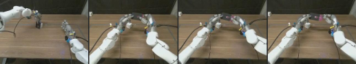
图 17：任务 X 的关键阶段：卡片提取。
任务 X：提取卡片文本
指令：“桌子上的立方体旁边有一个包含两张卡片的卡片盒。用左手拿起卡片盒，然后用右手拇指通过中央开口将卡片滑出；随后，用右手拇指和食指将第一张卡片滑出，注意不要拉出第二张卡片。”机器人必须用左手拿起包含两张卡片的卡片套，用右手拇指将卡片部分滑出，然后用右手拇指和食指将底部的卡片推回，使仅顶部卡片暴露出来，从而提取出那一张卡片。
Task X: Extract Card. Text Instruction: “Next to the cube on the table lies a card case containing two cards. Pick up the case with the left hand, then use the right thumb to slide the cards out through the central opening; subsequently, use the right thumb and index finger to slide out the first card, taking care not to pull out the second one.” The robot must pick up the
card sleeve (containing two cards) with the left hand, use the right
thumb to rub the cards partially out, then use the right thumb and
index finger to push the bottom card back in so that only the top
card remains exposed, and extract that single card.
评分标准（累加式）：
Grading rubric (additive):
- •
: (a) 左手拿起并握住卡片套。
+ 0.2 : (a) Left hand picks up and holds the card sleeve.
- •
: (b) 右拇指将卡片部分从袖套中擦出。
+ 0.3 : (b) Right thumb rubs the cards partially out of the sleeve.
- •
: (c) 右拇指和食指推动底部的卡片。
+ 0.3 : (c) Right thumb and index finger push the bottom card in.
- •
: (d) 右手从袖子中取出最顶端的卡片。
+ 0.2 : (d) Right hand extracts the single top card from the sleeve.
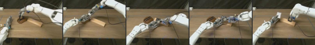
图 18：任务 XI：扑克博弈的关键阶段。
任务十一：打扑克操作。操作指令为：“用右手拿起一叠扑克牌，然后将其移交给左手；用左手将整叠牌举高，用右手拇指将最上面的牌滑出，握住该牌，并将其放入卡片收纳器内。”机器人必须用右手从上方握住整叠牌，将其移交给左手，用右手拇指将最上面的牌部分滑出，用右手拇指和食指调整位置，直到恰好有一张牌突出，握住该单张牌，并将其垂直插入专用的卡片插槽中。
Task XI: Deal Poker. Text Instruction: “Pick up a stack of playing cards with your right hand, then transfer it to your left; hold the stack aloft with your left hand, use your right thumb to slide out the top card, grasp it, and place it into the card holder.” The robot must
grasp the full card stack from above with the right hand, transfer it
to the left hand, use the right thumb to flick the top card partially
out, adjust with the right thumb and index finger until exactly one
card protrudes, grasp that single card, and insert it vertically into
the dedicated card slot.
评分标准（累加式）：
Grading rubric (additive):
- •
: (a) 右手从上方抓住卡片堆。
+ 0.1 : (a) Right hand grasps the card stack from above.
- •
: (b) 右手将堆叠物传递给左手（手传递）。
+ 0.2 : (b) Right hand transfers the stack to the left hand
(handover).
- •
: (c) 右拇指快速挥动并调整，直至恰好有一张卡片从顶部凸出。
+ 0.3 : (c) Right thumb flicks and adjusts until exactly one
card protrudes from the top.
- •
: (d) 右手成功抓住那张突出的卡片。
+ 0.3 : (d) Right hand successfully grasps the single protruding card.
- •
: (e) 右手将卡片垂直插入卡槽中。
+ 0.1 : (e) Right hand inserts the card vertically into the
card slot.
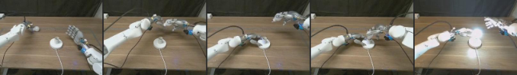
图 19：任务 XII：螺丝灯泡的关键阶段。
任务十二：螺丝灯泡操作。操作说明：“桌面上有个灯泡和底座。用左手拿起灯泡，将其转移到右手；然后，用左手固定住底座，同时用右手将灯泡旋入底座中，直至灯泡亮起。”机器人必须用左手拿起灯泡，将其转移到右手（交接动作），用左手稳定灯座，再用右手将灯泡旋转多圈，直至完全插入灯座并点亮。
Task XII: Screw Lightbulb. Text Instruction: “There is a lightbulb and a base on the desktop. Use your left hand to pick up the lightbulb and transfer it to your right hand; then, use your left hand to hold down the base while using your right hand to screw the lightbulb into the base until it lights up.” The robot must pick up the
lightbulb with the left hand, transfer it to the right hand (handover),
stabilize the lamp socket with the left hand, and use the right hand
to rotate the bulb through multiple turns into the socket until it
is fully seated and illuminates.
评分标准（累加式）：
Grading rubric (additive):
- •
: (a) 左手拿起灯泡。
+ 0.1 : (a) Left hand picks up the lightbulb.
- •
: (b) 左手将灯泡移交给右手（手传递动作）。
+ 0.2 : (b) Left hand transfers the bulb to the right hand
(handover).
- •
: (c) 左手固定了灯座。
+ 0.1 : (c) Left hand stabilizes the lamp socket.
- •
: (d) 右手调整灯泡位置并持续旋转，以使螺纹咬合。
+ 0.4 : (d) Right hand aligns the bulb and rotates continuously to engage the threads.
- •
: (e) 灯泡已完全就位，灯具开始发光。
+ 0.2 : (e) Bulb is fully seated and the lamp illuminates.
附录 G T-Rex 数据集
T-Rex数据集的构建旨在支持大规模的中训练阶段触觉反应型灵巧操作策略训练。接下来，我们将介绍每集记录的模态信息、物体-运动基本分类体系、场景层面的多样性、质量控制流程、语言注释方法，以及数据集的许可与伦理考量。
The T-Rex Dataset is constructed to support large-scale mid-training of tactile-reactive dexterous manipulation policies. In the following, we describe the modalities recorded per episode, the object–motor-primitive taxonomy, the scene-level diversity, the quality-control pipeline, the language-annotation procedure, and the dataset’s licensing and ethical considerations.
记录方式与场景架构。每个演示场景都被存储为一组时间对齐的同步流包，这些流包通过图 7 中描述的遥操作堆栈收集得到。具体而言，每个场景包含：(i) 三路单目 RGB 流（一台头部 ZED X Mini 相机和两台腕部安装的 ZED X One S 宽视场相机），分辨率为 及 30 Hz；(ii) 双手本体感知，包括 手臂关节位置与速度，以及 至 DoF 的 Sharpa Wave 手部关节状态；(iii) 双手腕的 末端执行器姿态；(iv) 所有十个指尖的每指指尖触觉观测数据，包括单通道变形深度图与 6 轴力 wrench；以及 (v) 与该场景相关的自然语言任务指令（参见下文“基于 VLM 的自动化语言标注”）。 所有数据流共享一个共同的时间戳，并以高级遥操作线程的 30 Hz 频率进行记录，从而确保视觉、本体感知、动作和触觉信号之间的时间一致性。
Recorded Modalities and Episode Schema. Each demonstration episode is stored as a time-aligned bundle of synchronized streams collected through the teleoperation stack described in Fig. 7 . Specifically, every episode contains: (i) three monocular RGB streams (one head ZED X Mini and two wrist-mounted ZED X One S wide-view cameras) at 640 × 360 resolution and 30 Hz; (ii) bimanual proprioception consisting of 2 × 7 arm joint positions and velocities together with the 2 × 22 -DoF Sharpa Wave hand joint states; (iii) S E ( 3 ) end-effector poses of both wrists; (iv) per-fingertip tactile observations for all ten fingertips, comprising a single-channel deformation depth map and a 6-axis net wrench; and (v) the natural-language task instruction associated with the episode (see “Automated VLM-based Language Annotation” below). All streams share a common timestamp and are recorded at the 30 Hz cadence of the high-level teleoperation thread, ensuring tight temporal alignment between vision, proprioception, action, and tactile signals.
数据分类体系。为了全面涵盖具有接触行为的操作行为，我们通过系统地将 207 常见家用物品与 22 运动原语相结合，并仅保留物理上可行的物体-运动原语组合，从而构建数据集分类体系。在 候选组合中，通过手动标注的每类原语可行性检查表，剔除不可行的组合（例如，将倾倒原语应用于实心块体，或将旋转原语应用于非关节式物体）。这一过程最终得到 502 独特的物体-运动原语组合，这些组合包含 7755 个演示片段和 100 小时的时间段，其中平均片段长度为 29.8 秒，四分位数范围为 21.0 至 41.1 秒。 每对保留样本平均获得 和 16 类型的演示，以让策略接触应用于每个兼容对象的每个基本动作的完整分布。这些演示由遥操作器在 10 周的时间内收集。物体类别、运动基本动作与物体-运动基本动作对的分布结果如图 2 所示。
Data Taxonomy. To ensure broad coverage of contact-rich manipulation behaviors, we construct the dataset taxonomy by systematically combining 207 common household objects with 22 motor primitives and retaining only physically feasible object–motor primitive pairs. Out of the 207 × 22 = 4,554 candidate combinations, infeasible pairs (e.g., the pour primitive applied to a solid block, or the twist primitive applied to a non-articulated object) are pruned via a per-primitive feasibility checklist annotated manually. This process yields 502 unique object–motor primitive combinations, comprising 7755 episodes and 100 hours of demonstrations, with a median episode length of 29.8 s and an interquartile range of 21.0–41.1 s. Each retained pair receives on average ∼ 16 demonstrations to expose the policy to the full action distribution of every primitive applied to every compatible object. Demonstrations were collected by teleoperators over a period of 10 weekss. The resulting distribution of object categories, motor primitives, and object–motor primitive pairs is shown in Fig. 2 .
场景多样性。为了提升视觉鲁棒性并支持基于语言的行为模式，我们在多种不同场景配置下收集数据。具体而言，我们使用六种不同的桌面背景，并在演示过程中改变周围物体的排列方式。在数据收集过程中，从超过 210 个非目标物品中随机选取干扰物（每个场景通常可见 0 – 5 个干扰物）与目标物体一同放置，以增加场景的复杂性，促使策略根据任务上下文和语言指令识别并操作正确的物体。此外，对于每一对物体与运动技能的组合，我们在每个场景开始时随机改变物体的初始位置和方向。 结合多种不同的物体与运动基元，这些差异使得策略面临丰富的视觉与空间多样性，从而减少了对特定场景布局的过拟合，并提升了对未见环境的泛化能力。
Scene Diversity. To improve visual robustness and support language-conditioned behavior, we collect data under diverse scene configurations. Specifically, we use six distinct tabletop backdrops and vary the arrangement of surrounding objects across demonstrations. During data collection, randomly selected distractor objects (drawn from a pool of more than 210 non-target items, with typically 0–5 distractors visible per scene) are placed alongside the target object to increase scene complexity and encourage the policy to identify and manipulate the correct object based on task context and language instructions. Furthermore, for each object–motor skill pair, we randomize the initial object position and orientation at the start of every episode. Combined with the large variety of objects and motor primitives, these variations expose the policy to substantial visual and spatial diversity, reducing overfitting to specific scene layouts and improving generalization to unseen environments.
数据清洗。数据收集完成后，我们执行数据清洗阶段，以确保数据集的质量与一致性。我们剔除包含不稳定触觉测量值、损坏的传感器数据或因远程操作故障导致的异常运动的场景。此外，我们进一步过滤那些表现出极端关节空间速度或其他可能对策略学习产生负面影响的异常现象的演示数据。
Data Cleaning. After data collection, we perform a data-cleaning stage to ensure the quality and consistency of the dataset. We remove episodes containing unstable tactile measurements, corrupted sensor streams, or abnormal motions caused by teleop failures. We further filter demonstrations exhibiting extreme joint-space velocities or other artifacts that may negatively affect policy learning.
基于自动 VLM 的语言标注基准模型。为了能够在多种任务中高效生成语言指令标注，我们利用商业级视觉-语言基础模型对每个场景进行标注。对于每一个场景，我们向模型输入一组采样图像帧（从头摄像头视角下Subsampled 4至6帧），以及在遥操作过程中记录的最小标签信息（目标物体名称与运动基本单元名称），并提示模型生成一条能够全面描述场景运动的指令性句子。随后由人类标注员对生成的标注进行验证，以排除幻觉和不准确的描述。
Automated VLM-based Language Annotation Baseline. To scalably generate language instruction annotations across diverse tasks, we annotate each episode with a commercial vision–language foundation model. For every episode, we feed the model a set of sampled image frames (subsampled 4 to 6 frames from the head camera view) together with the minimal labels recorded during teleoperation (target object name and motor-primitive name), and prompt the model to compose a single imperative sentence that comprihensively describes the episode’s motion. The resulting annotations are then verified by human annotators to filter out hallucinations and imprecise descriptions.
伦理考量与数据集发布。所有 T-Rex 演示均通过 Dexmate Vega- 1 研究平台在受控实验室环境中收集；发布的 RGB 视频中未出现第三方人类受试者，且在重置交互过程中包含遥操作者手部的意外帧会被裁剪掉。数据收集过程中使用的家庭物品均为不含个人识别信息的普通物品。遥操作者已就其遥操作数据的录制与发布给予知情同意。我们计划以 MIT 许可证发布 T-Rex 数据集，该数据集包含原始传感器数据流、生成的触觉表示以及语言注释，同时附上用于复现本文研究结果的数据加载器与预处理脚本。
Ethical Considerations and Dataset Release. All T-Rex demonstrations are collected in a controlled laboratory environment using the Dexmate Vega-1 research platform; no third-party human subjects appear in the released RGB streams, and incidental frames containing teleoperator hands during reset interactions are clipped from the released episodes. The household objects used during data collection are commodity items that contain no personally identifying information. Teleoperators provided informed consent for the recording and release of their teleoperation data. We plan to release the T-Rex dataset, including raw sensor streams, derived tactile representations, and language annotations, under the MIT license, together with the data loaders and pre-processing scripts required to reproduce the results in this paper.
附录 H 故障案例分析
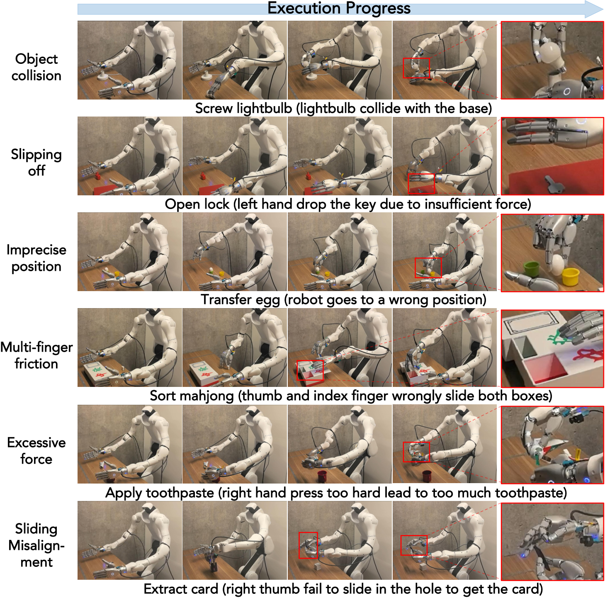
图 20：故障案例分析。从左到右的顺序表示任务执行进度，而最后一列则展示了具体的故障场景。
在多种场景和任务中，我们观察到了多种不同的故障情况，如图 20 所示；具体而言，红色框框标出了这些故障过程中发生的接触问题。
Across various scenarios and tasks, we observed a diverse range of failure cases, as illustrated in Fig. 20 ; specifically, the red boxes highlight the contact issues that occurred during these failures.
1 ) 物体碰撞。在首行中的螺丝灯泡任务中，右手在抓取灯泡后未能正确将其插入插座；相反，导致灯泡与底座发生碰撞，从而阻碍了后续的插入和旋转步骤的完成。这表明在执行复杂任务时，缺乏精细的视觉对齐，且过快的动作执行会导致物体碰撞。
1) Object Collision. During the screw lightbulb task in the first row, the right hand failed to correctly insert it into the socket after grasping the lightbulb; instead, it caused the lightbulb to collide with the base, thereby preventing the subsequent insertion and rotation steps from being completed. This indicates that during the execution of complex tasks, there remains a lack of fine-grained visual alignment, and that excessively rapid motion execution can lead to object collisions.
2 ) 滑落。在第二行的开锁任务中，模型成功滑落并抓住了钥匙；然而，在后续步骤中未能保持稳固的抓握，导致钥匙滑落。对于小物体的抓取及精准手部操作，模型仍缺乏一定的精细灵活性，这仍是遥操作数据分布所带来的限制。
2) Slipping Off. During the open lock task in the second row, the model successfully slid and grasped the key; However, it failed to maintain a secure grip during the subsequent steps, causing the key to slip and drop. For the grasping of small objects and precise in-hand manipulation, the model still lacks a certain degree of fine-grained dexterity, which remains a limitation attributable to the data distribution of the teleoperated data.
3 ) 位置不精确。在转移鸡蛋任务中，模型成功抓取了鸡蛋，并依靠力反馈来确保其完整性。但未能将鸡蛋正确放置于黄色蛋盘上。这表明模型在精准定位方面仍存在不足，这是行为克隆（BC）现象所固有的分布偏移特性所带来的限制。
3) Imprecise Position. In the task of transfer egg , the model successfully grasped the eggs and relied on force feedback to ensure its integrity. But it failed to place the egg correctly into the yellow egg tray. This demonstrates that the model still suffers from deficiencies in precise positioning, which is a limitation that highlights the inherent distribution shift characteristic of Behavioral Cloning (BC).
4 ) 多指摩擦。在麻将游戏中，模型正确地将左侧的“红中”牌识别为需要打开的目标牌；然而，拇指的位置过低，导致其与中间的“绿发”牌接触，从而意外地同时打开了两个牌。这表明灵巧的手部控制在单个手指层面仍缺乏协调性，多指之间非预期接触等问题可能依然存在。
4) Multi-finger friction. In the sort mahjong task, the model correctly selected the ”Red Zhong” tile located on the left as the target box to be opened; however, the positioning of its thumb was too low, causing it to make contact with the central ”Green Fa” tile and inadvertently open two boxes simultaneously. This highlights that dexterous hand control still lacks coordination at the individual finger level, and issues such as unintended contact between multiple fingers may persist.
5 ) 过大的力。在牙膏涂抹任务中，模型在握住牙膏管后施加了过大的力，导致过多的牙膏被挤出，从而无法用牙刷吸取。这表明，在操作某些可变形物体时，模型受到其连续预测机制中固有的过度控制力所限制。
5) Excessive Force. During the apply toothpaste task, after grasping the tube, the model applied excessive force and squeezed out too much toothpaste, resulting in a failure to catch it with the toothbrush. This highlights that in the manipulation of certain deformable objects, the model remains constrained by the overly forceful control inherent in its sequencial prediction mechanism.
6 ) 滑动错位。在提取卡片任务中，模型在抓取卡片套后，在从小孔中提取卡片时未能施加均匀力；这表明在需要滑动运动的任务中，模型需要在时间维度上建立更强的触觉条件，以产生正确的动作。
6) Sliding Misalignment. In the extract card task, after grasping the card sleeve, the model failed to apply uniform force when extracting the card from the small slot; this suggests that for tasks requiring sliding motions, the model needs to establish stronger tactile conditioning in the temporal dimension to generate the correct actions.